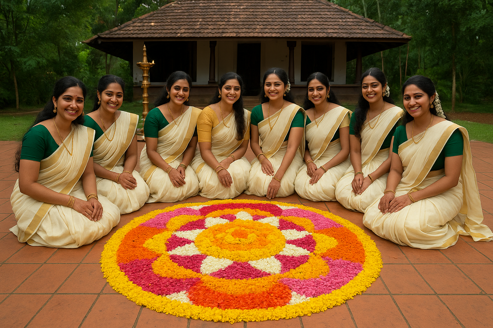
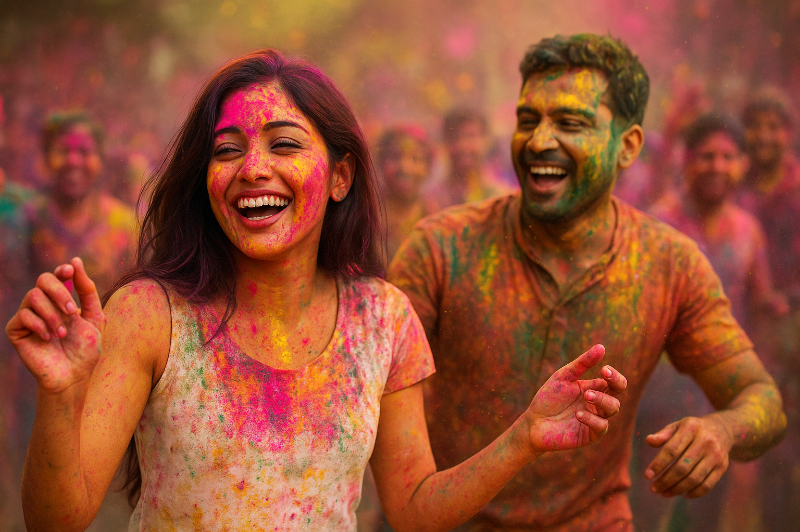

INDIAN FESTIVALS
DIWALI

DIWALI,also called the Festival of Lights, is celebrated across India to mark the victory of good over evil.
People light lamps, decorate their homes, exchange sweets, and burst fireworks. It is a time of joy, family gatherings,
and prayers for prosperity.
ONAM

ONAM, is the harvest festival of Kerala, celebrated to welcome King Mahabali.
It is marked with beautiful flower carpets (Pookalam), grand feasts (Onam Sadhya), boat races, and traditional dances.
The festival shows the culture, unity, and joy of the people of Kerala.
HOLI

HOLI,is the festival of colors, celebrated across India with great joy and energy.
People play by throwing colored powders and water, sing and dance, and share festive sweets like gujiya.
It marks the arrival of spring and the victory of good over evil, bringing people together in happiness and unity.